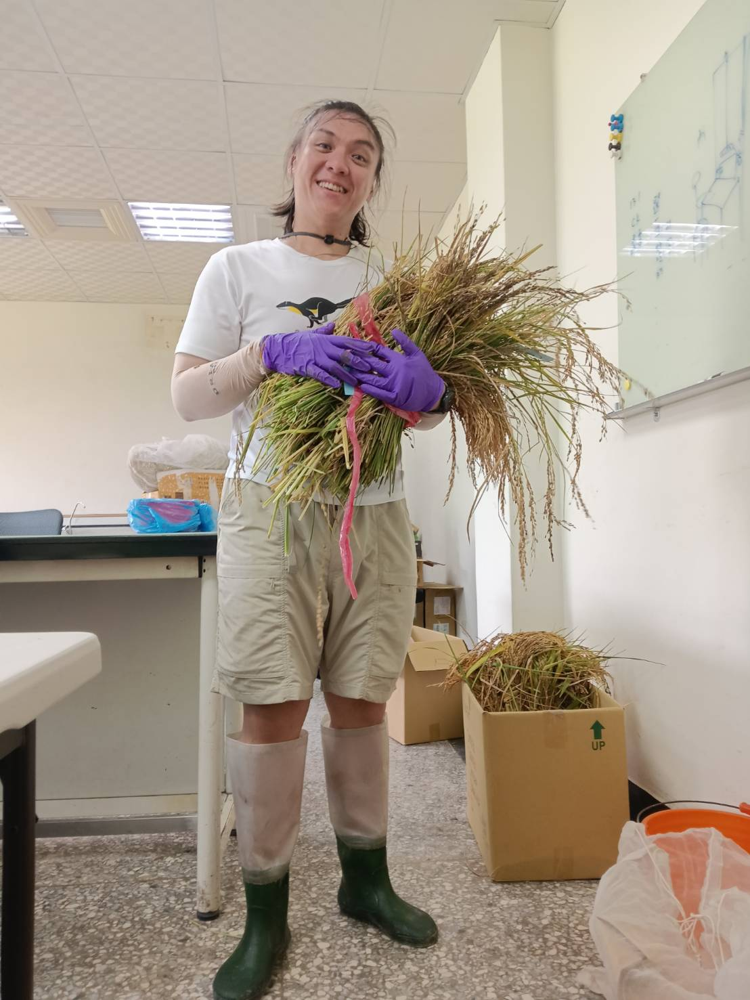
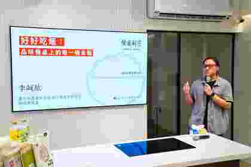
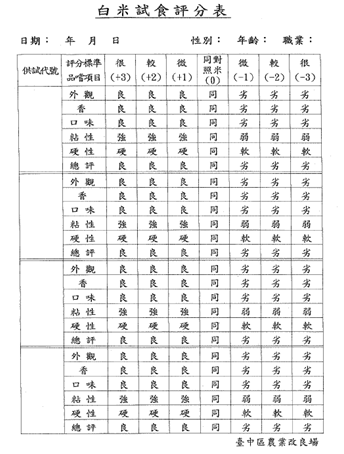
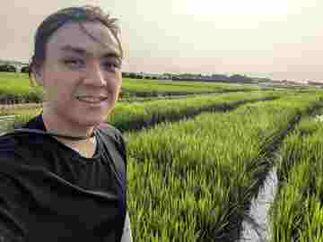

方案一
稻米品種與品質基礎講座
介紹臺灣水稻品種、品種差異與稻米品質內涵，不含現場米飯品評。適合一般消費者、食農教育、社區大學及推廣活動。
建議 60–90 分鐘
把研究資料轉化為可以理解、觀察、實際品嚐的稻米課程，依一般民眾、教師、大學生、農民與產業從業者調整內容深度。

Li Cheng-Hong, Levi
農業部臺中區農業改良場助理研究員，具農藝學、遺傳育種背景，長期從事水稻栽培、稻米品質與米飯官能品評研究及推廣。
課程內容以學術文獻、專業教科書、田間與米質試驗，以及稻米產業第一線經驗為基礎；重點不是只告訴學員哪一種米「比較好吃」，而是建立理解品種、品質與食味差異的方法。
可依活動型態選擇講授、搭配米飯品評，或進階品質工作坊。若希望真正建立食味差異的感受，建議選擇含實際品評的方案。
介紹臺灣水稻品種、品種差異與稻米品質內涵，不含現場米飯品評。適合一般消費者、食農教育、社區大學及推廣活動。
介紹品種與品質，搭配 3–5 種米飯進行實際品評、比較或盲測。最低約 30 分鐘講授＋30 分鐘品評與討論；時間充足時可進一步比較香氣、質地與適合用途。
可納入 CNS 白米外觀品質、粒型判讀、不同品種或處理樣本比較、盲測設計、米飯官能評分及品評資料整理與分析。適合大學、專業人員與產業從業者。
從一般消費者的餐桌體驗、教師食農教育，到農會與專業課程，可依對象改變內容比例；以下為部分公開活動紀錄。

從品種、澱粉、栽培到煮飯，搭配多種臺灣米盲測，讓參與者實際吃出米飯品質與風味差異。
查看活動紀錄 →完整影音呈現實際授課節奏，從稻米知識、研究案例一路延伸到品質判讀與米飯食味理解。
前往 YouTube →將較專業的品種與米質概念轉化為生活語言，連結研究數據與消費者真正吃得到的米飯差異。
前往 YouTube →
面向農會與產業現場，把水稻品種、品質判讀及食味概念連結生產實務，建立可直接應用的品質思維。
查看活動紀錄 →從臺灣稻米品質研究出發，對照美國、日本經驗，理解米粒背後的科學、風土、研究方法與時代變化。
查看活動紀錄 →
以臺灣稻米品種、品質研究與科學米飯品評，協助教師把感官體驗轉化為可延伸的食農教育知識。
查看研習資訊 →註：YouTube 以原影片直接嵌入；其他案例優先使用講師自有網站既有授課／品評素材，第三方活動頁則以來源連結保留原始脈絡。
以下供主辦單位進行活動規劃與經費估列；政府機關、學校及其他單位之實際核支，仍依各單位經費來源及會計規定辦理。
| 項目 | 費用／估列方式 | 備註 |
|---|---|---|
| 講師鐘點費 | 2,000 元／小時 | 依課程時數與主辦單位核支規定辦理。 |
| 品評前置執行 | 建議 2,000 元 | 含米飯品評時，講師需提前約 1 小時到場炊煮與準備。 |
| 交通費 | 實際必要費用 | 由邀請單位負擔；計算範例見下方。 |
| 米樣／耗材／電子鍋運送 | 依實際使用或發生費用 | 米樣以 3–5 種為原則；租借或運送另計。 |
| 助教／現場工作人員 | 建議 2,500 元／日＋交通費 | 亦可由主辦單位提供至少 1 人協助洗米、炊煮、分樣及善後。 |
米飯品評涉及前置炊煮、器材、樣本與現場分送。若能在邀約初期確認以下事項，活動執行會更順暢。
需確認米樣、秤量、洗米、加水、炊煮、電子鍋設定、樣品編碼與品評流程，原則上至少提前約 1 小時。
以 3–5 種米樣為原則；通常一種樣品使用一個電子鍋。可由主辦單位提供，或事前協調借用與運送。
主辦單位需確認插座配置、延長線及電路負載，確保多台電子鍋可安全同時使用，並預留分樣與品評空間。
含 3–5 種品評時，建議至少 1 名助教或工作人員，協助洗米、炊煮、盛裝、分送、搬運與活動後整理。
以臺中區農業改良場至活動地點之實際必要路程估算。高鐵、火車、捷運等覈實；自用汽車必要路程按每公里 3 元估算。
包含品評碗／杯、湯匙、飲用水、標籤、盲樣編號、書寫用品及清潔用品等，可由主辦單位準備或依實際費用估列。
可依參與者背景調整比例與深度，不必拘泥於固定講綱。
介紹水稻馴化、臺灣品種發展與特色，以及品種如何影響外觀、質地、香氣與食用方式。
涵蓋外觀、碾米、理化、蒸煮與食味品質，說明直鏈澱粉、蛋白質、澱粉糊化及栽培、收穫、乾燥、儲藏等因素。
介紹樣品準備、盲樣、順序，以及外觀、香氣、口味、硬度、黏性、彈性與總評等感官特性。
可依需求加入 CNS 外觀品質、粒型判讀、特殊米、加工用途、不同栽培處理比較、品評試驗設計與資料分析。
提供下列資訊即可快速確認課程形式、設備與經費。
課程可依對象、活動時間、米樣數量與教學目的調整。若安排米飯品評，建議及早確認場地、電子鍋與現場工作人力。